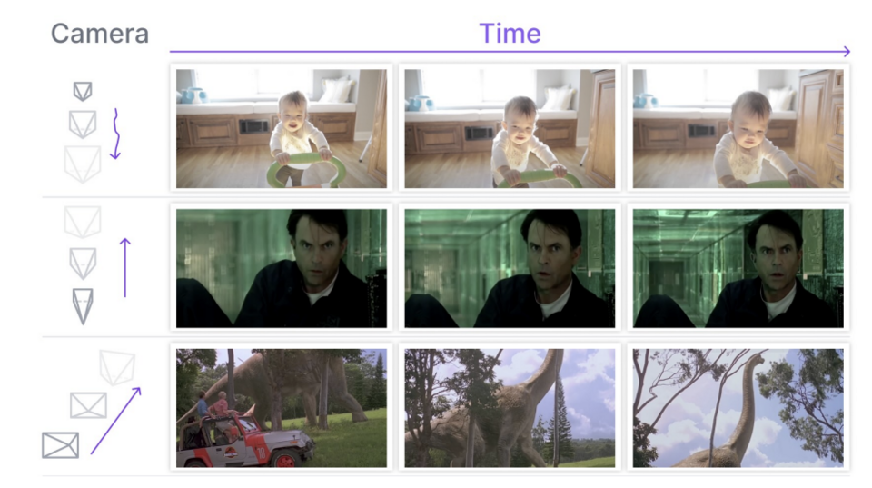
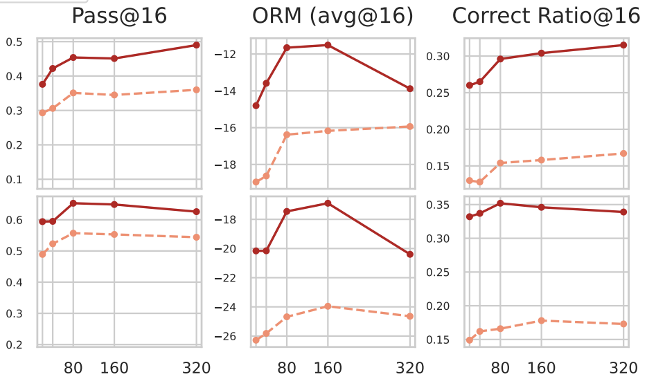
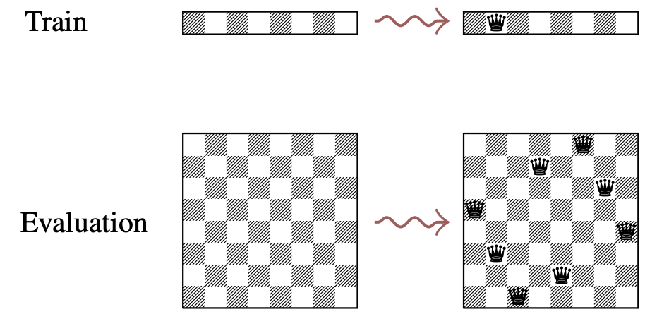

Towards Understanding Camera Motions in Any Video
NeurIPS 2025 Track on Datasets and Benchmarks · Spotlight
camera_bench.png
9 media files grouped by the listed publication venue and year.
9 of 9

NeurIPS 2025 Track on Datasets and Benchmarks · Spotlight
camera_bench.png

NeurIPS 2025 · Oral
evollm.png
NeurIPS 2025 · Spotlight
comp_reasoning_preview.mp4

NeurIPS 2025 · Spotlight · Alternate media
comp_energy_min.png
NeurIPS 2025 · Spotlight
maze.mp4

NeurIPS 2025 · Spotlight
win_fast.png

NeurIPS 2025
mindjourney.png

NeurIPS 2025
persistent_3d.png

NeurIPS 2025
ebm_manifold.png
No matches.